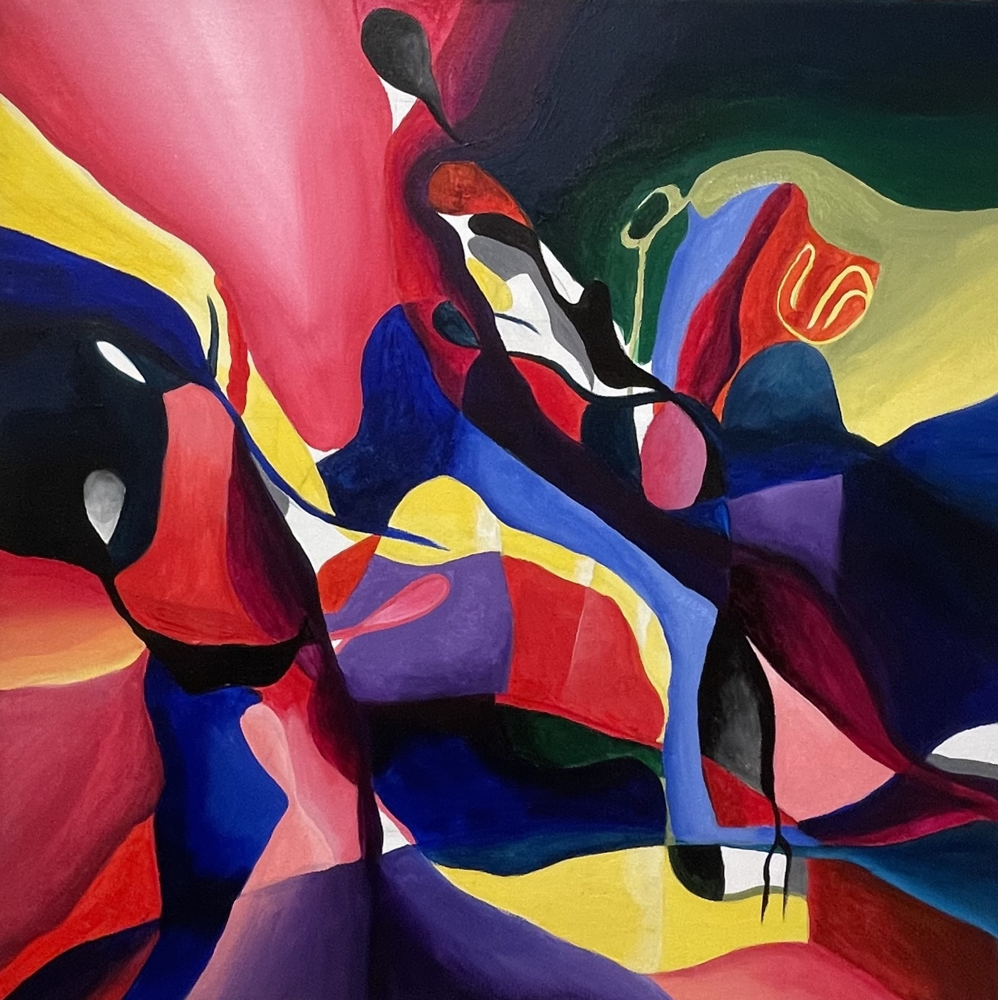

<!DOCTYPE html>
<html>
<head>
<style>
body {
  background-color: Mediumpurple;
}
</style>
</head>
<body>


</body>
</html>
<!DOCTYPE html>
<html>
<body>


<h1 style="border: 2px solid Black;">NETSCAPE - my escape from reality to communicate through forms of art.</h1>

</p>

</body>
</html>
<!DOCTYPE html>
<html lang="en">
<head>
<title>CSS Template</title>
<meta charset="utf-8">
<meta name="viewport" content="width=device-width, initial-scale=1">
<style>
* {
  box-sizing: border-box;
}

body {
  font-family: Times New Roman, Helvetica, sans-serif;
}

/* Style the header */
header {
  background-color: #DB7093;
  padding: 30px;
  text-align: center;
  font-size: 35px;
  color: SlateBlue;
}

/* Create two columns/boxes that floats next to each other */
nav {
  float: left;
  width: 30%;
  height: 300px; /* only for demonstration, should be removed */
  background: #DB7093;
  padding: 20px;
}

/* Style the list inside the menu */
nav ul {
  list-style-type: none;
  padding: 0;
}

article {
  float: left;
  padding: 20px;
  width: 70%;
  background-color: #DB7093;
  height: 300px; /* only for demonstration, should be removed */
}

/* Clear floats after the columns */
section::after {
  content: "";
  display: table;
  clear: both;
}

/* Style the footer */
footer {
  background-color: #DB7093;
  padding: 10px;
  text-align: center;
  color: white;
}

/* Responsive layout - makes the two columns/boxes stack on top of each other instead of next to each other, on small screens */
@media (max-width: 600px) {
  nav, article {
    width: 100%;
    height: auto;
  }
}
</style>
</head>
<body>

<section>
  <nav>
    <ul>

      <li><a href="#">Why 'NETSCAPE'?</a></li>
    </ul>
  </nav>
  <article>
    <p> I consider the term 'NETSPACE' to be my form of escaping reality to create concepts within my body of work. I communicate through my medium as a painter so by having the ability to show my experience as a young queer Filipino woman. Helps me express my emotions during different stages of my life. </p>
  </article>
</section>

<!DOCTYPE html>
<html>
<body>


<h2>Tangled Mind (2023) Acrylic on Canvas, 20x20 inches</h2>
<!DOCTYPE html>
<html>
<body> 




  </nav>
  <article>

    <p> Tangled Mind is inspired by the wavelengths within my mind, each color represents the variety of emotions I feel during a specific time in my life. The intensity of colors represents a mixture of love, sadness, and depression. The lines are inspired by hair strains on the shower wall.  </p>
  </article>
</section>

<!DOCTYPE html>
<html>
<head>
<meta name="viewport" content="width=device-width, initial-scale=1">
<style>
a {
  text-decoration: none;
  display: inline-block;
  padding: 8px 16px;
}

a:hover {
  background-color: #ddd;
  color: black;
}

.previous {
  background-color: #f1f1f1;
  color: black;
}

.next {
  background-color: #6A5ACD;
  color: white;
}

.round {
  border-radius: 50%;
}
</style>
</head>
<body>

v<a href="closing4.html" class="previous round">&#8249;</a>
<a href="pade2.html" class="next round">&#8250;</a>

</body>
</html> 